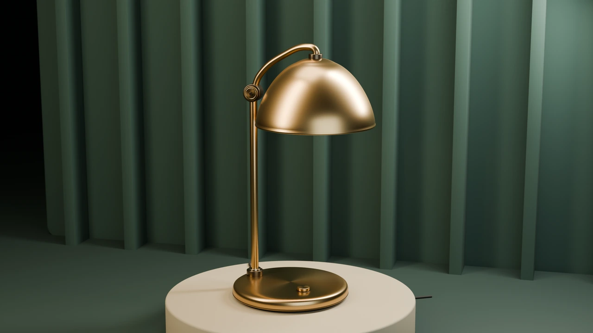
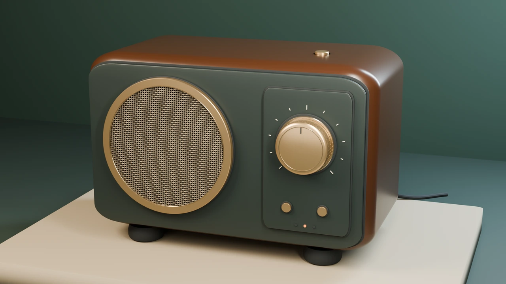
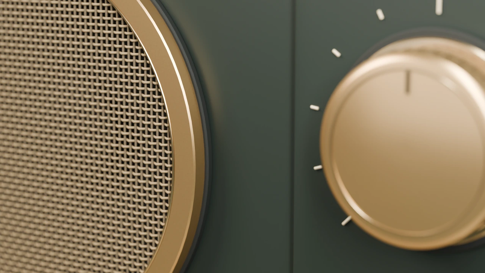

Three studies in light & matter
光落在材质上。Light. Material. Motion.
玻璃的透亮，金属的曲面，织物的交错。
三组由 DeepBlend 在本机制作的产品场景，
从静帧到六秒镜头，把细节放到眼前。
01
Amber Atlas
琥珀时间蜂蜜色玻璃与清透的陪衬瓶，落在象牙釉盘和砂色展台上。柔光穿过器壁，窄亮边勾出瓶肩与口沿。
GLASS / CERAMIC / CHAMPAGNE METAL
让光描述厚度。
玻璃由具有内壁与厚底的旋转轮廓生成；釉面、金属颈套与石材展台保留各自的表面响应。近景可以直接检查瓶肩的连续曲面与反射形状。
查看可复现场景 ↗02
Solstice
金色暮光香槟金灯罩，细长弯臂，温暖的灯下光。深绿建筑竖纹在背后退开，让金属轮廓成为画面的中心。

SPUN METAL / PORCELAIN / LIMESTONE
反射沿着曲面流动。
灯罩采用连续旋转轮廓，金属的各向异性方向与曲面一致。铰链、颈圈、灯罩内衬和底座分开建模；电缆经过展台边缘落回地面。
查看可复现场景 ↗03
Nocturne
织声深色木纹、哑光前板、香槟金旋钮。真正交错的格栅丝线，与细小的刻度和指示灯，形成安静的层次。


WOVEN GEOMETRY / DARK WOOD / MACHINED METAL
细节从几何里长出来。
格栅具有交错的实际丝线；旋钮、刻度、面板接缝与高光唇边均为独立部件。浅景深近景把编织结构和加工边缘放到同一视线里。
查看可复现场景 ↗